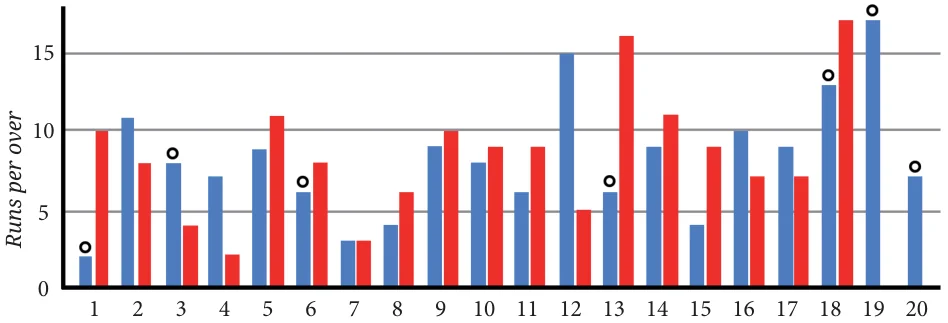

Have you ever missed watching a cricket match? You can catch up in a minute by looking at a graph. You might have seen graphs like the following one.

Overs
The horizontal line lists the overs starting from 1, and the vertical line indicates the runs scored in each over. The graph shows the number of runs scored per over as a double bar graph - each bar corresponding to a team. Let us call them the blue team (denoted by blue) and the red team (denoted by red). The scale used for the runs per over is 1 unit \(= 5\) runs. The circles shown on top of the bars indicate that a wicket fell in that over.
Answer the following questions based on the graph:
- 1.Can we tell who batted first? Who won the match?
- 2.How many runs did the blue team score in over 12?
- 3.In which over did the red team score the least number of runs?
- 4.Is it easy to tell the target set by the team batting first?